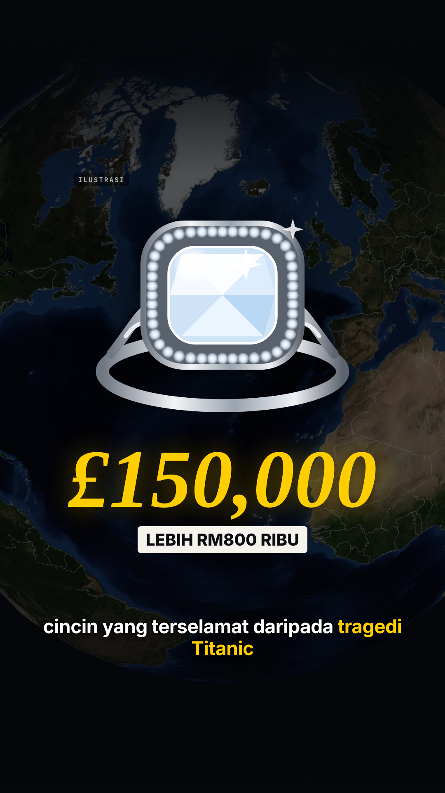
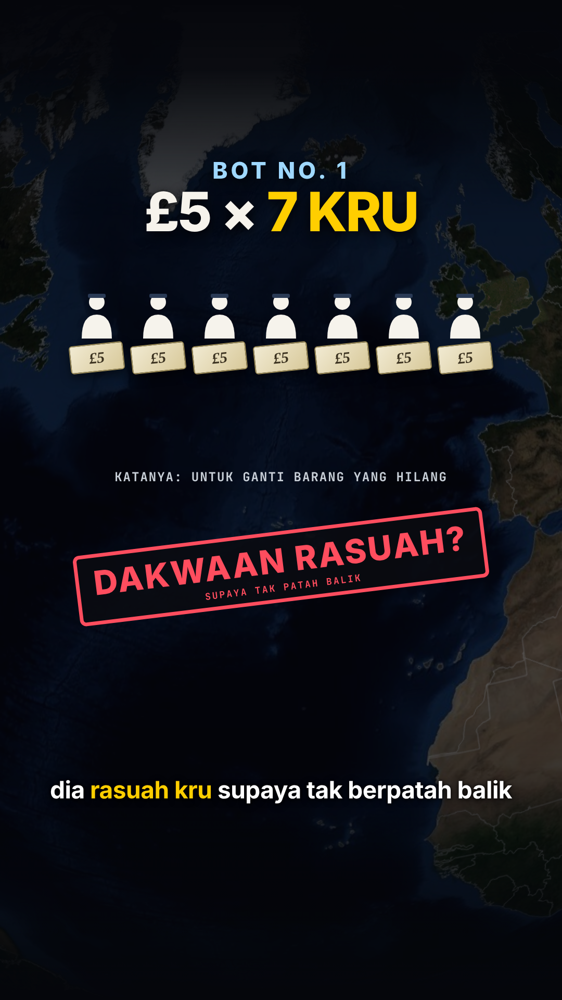
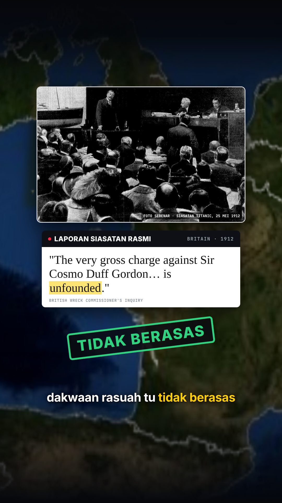
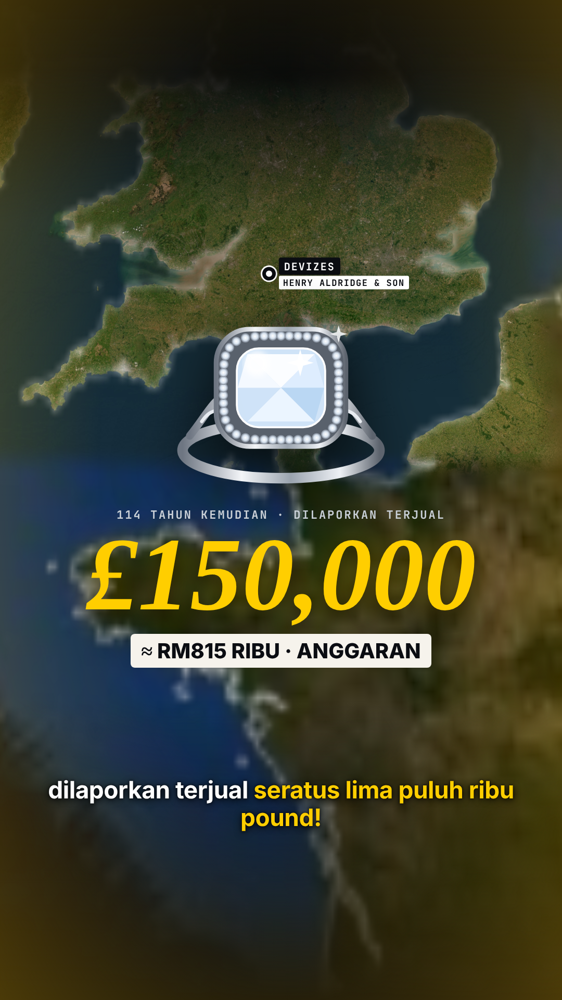
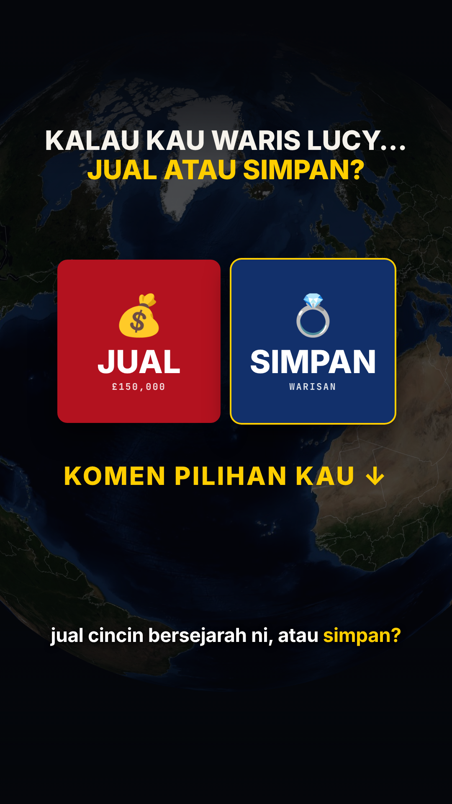

MAP ANIMATION · 1080×1920 · ~58 s · tiada B-roll · navy + biru ais + emas, merah hanya untuk DAKWAAN · gambar Lucy, Cosmo & siasatan 1912 = domain awam · cincin = ilustrasi ikut rupa sebenar

01 · 0:00
Hook
"Bayangkan, sebuah cincin yang terselamat daripada tragedi Titanic, kini dijual lebih lapan ratus ribu ringgit!"
"Dan tunggu dulu! Lepas tragedi tu, suami Lucy pula terpalit dengan satu dakwaan yang cukup mengejutkan."
Muzik dip, flash 1 frame, punch-in. Potret Sir Cosmo, SATU DAKWAAN…

07 · 0:36
£5 × 7 kru
"Dia bagi lima pound kepada setiap kru bot tu. Katanya, untuk ganti barang yang hilang. Tapi ramai dakwa, dia rasuah kru…"
7 kru dapat not £5 satu demi satu. Cop merah DAKWAAN RASUAH? (dakwaan, bukan fakta).

08 · 0:44
Keputusan siasatan
"Namun, siasatan rasmi Britain mendapati dakwaan rasuah tu tidak berasas."
Terbang ke London. Foto sebenar siasatan 1912, petikan asal laporan "…is unfounded.", cop hijau TIDAK BERASAS.

09 · 0:48
Reveal harga
"114 tahun kemudian, cincin… dilaporkan terjual £150,000! Lebih kurang RM815 ribu!"
Terbang ke Devizes, pin Henry Aldridge & Son. Cincin + count-up £150,000 → ≈ RM815 RIBU · ANGGARAN.

10 · 0:55
CTA tunggal
"Kalau kau waris keluarga Lucy, kau sanggup jual cincin bersejarah ni, atau simpan sampai bila-bila? Komen pilihan kau!"
JUAL vs SIMPAN, muzik berhenti tepat pada soalan, KOMEN PILIHAN KAU ↓.
Dakwaan dan keputusan dibezakan jelas (merah lawan hijau) · cincin tak pernah ditunjuk dari bangkai kapal · harga "dilaporkan", ringgit "anggaran" · satu CTA sahaja